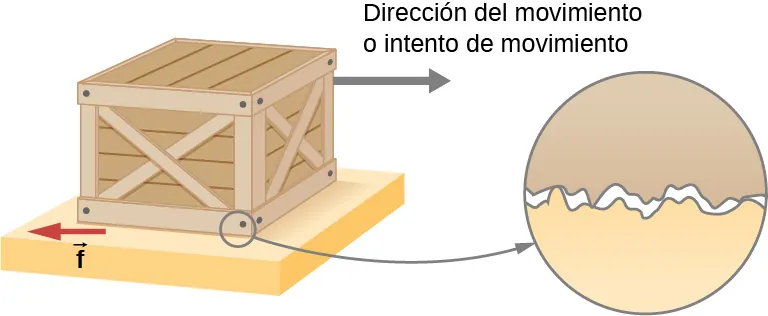
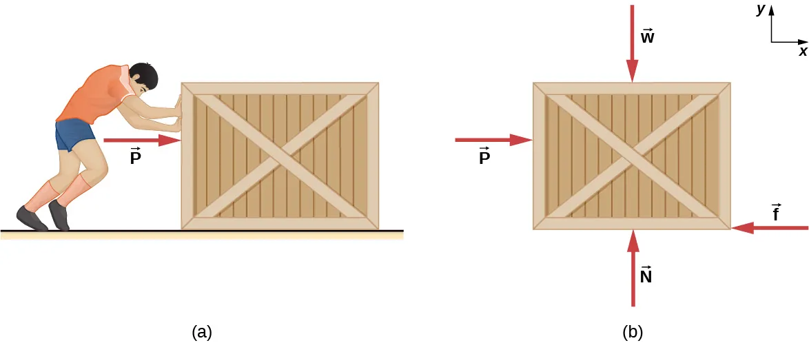
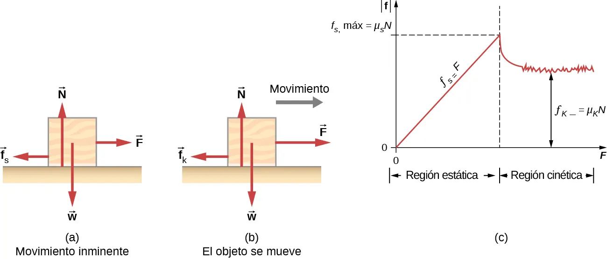
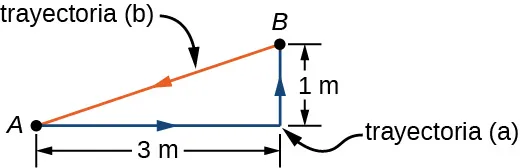
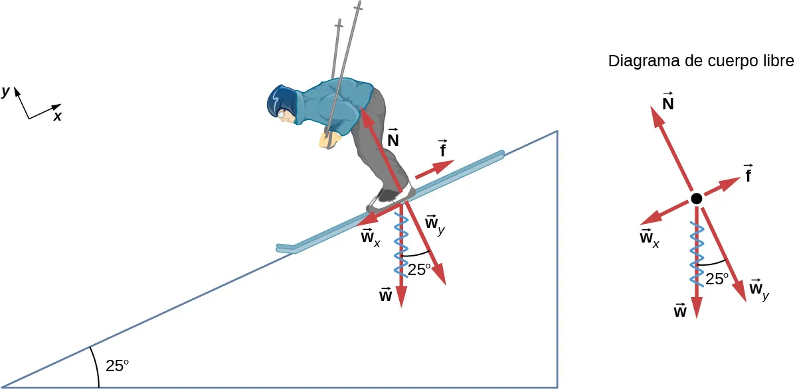
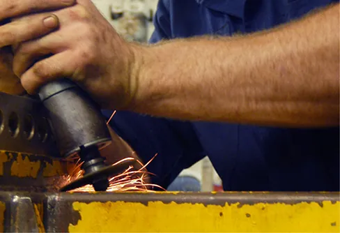
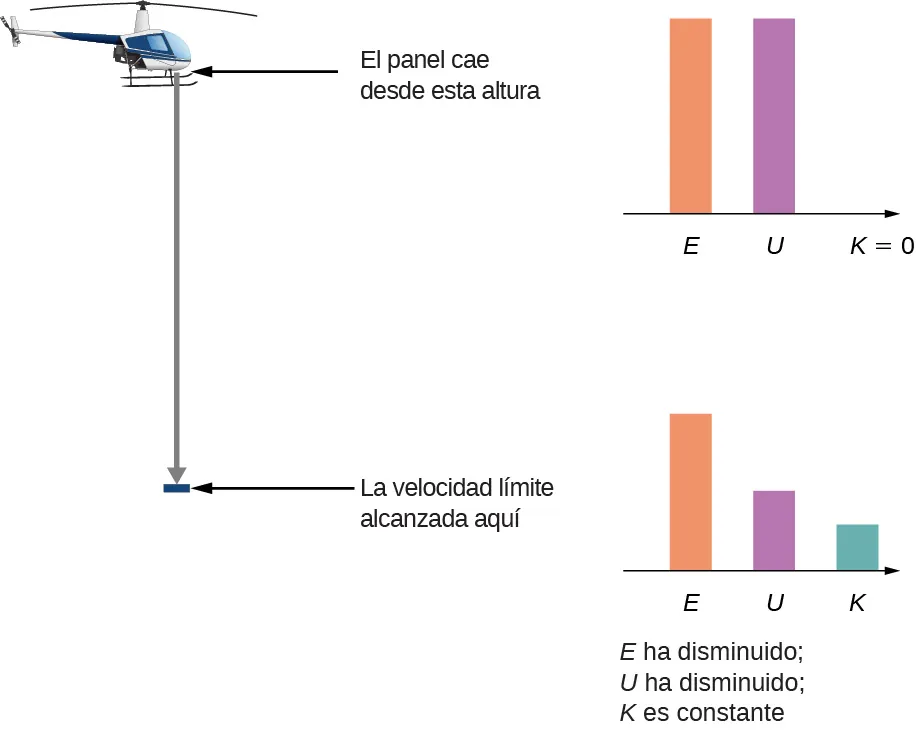
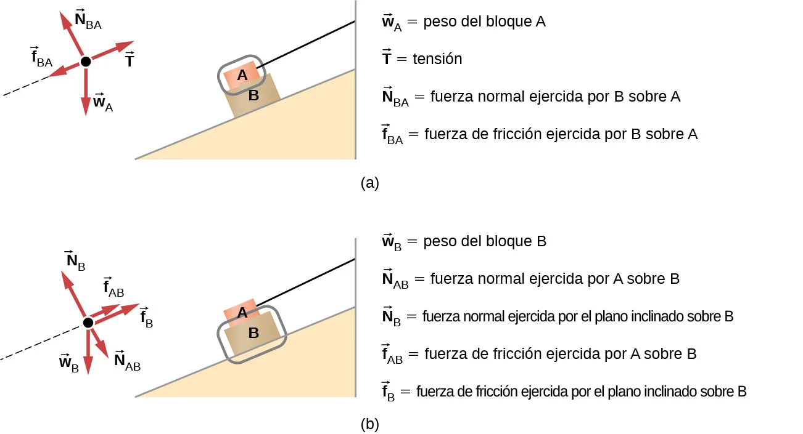
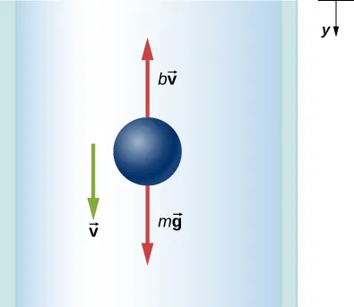

IES Valle del Alberche

📋 Enunciado
Partiendo del teorema de la energía cinética y de la definición de energía mecánica, demostrar que cuando actúan fuerzas de rozamiento (no conservativas), la variación de la energía mecánica del sistema es igual al trabajo realizado por dichas fuerzas:
Y que, para un cuerpo que se desliza sobre una superficie horizontal, el trabajo de rozamiento se expresa como:



🎯 Objetivo
Comprender que el rozamiento es una fuerza no conservativa que disipa energía mecánica, transformándola en calor. Establecer la conexión cuantitativa entre el trabajo de rozamiento y la pérdida de energía mecánica, permitiendo resolver problemas donde la energía no se conserva debido a la fricción.
🔬 Procedimiento
Consideramos un cuerpo de masa \( m \) que se desliza sobre una superficie horizontal rugosa con coeficiente de rozamiento cinético \( \mu \). El cuerpo tiene velocidad inicial \( v_i \) y recorre una distancia \( \Delta x \) hasta detenerse (o cambiar su velocidad a \( v_f \)).


En la dirección vertical, el peso \( P = mg \) se equilibra con la normal \( N \):
La fuerza de rozamiento cinético se opone al movimiento y su módulo es:


Como el rozamiento actúa en sentido opuesto al desplazamiento (\( \alpha = 180^{\circ} \), \( \cos 180^{\circ} = -1 \)):
El trabajo de rozamiento es siempre negativo (o nulo si no hay desplazamiento), lo que indica que disipa energía del sistema.


El trabajo neto es igual a la variación de energía cinética. Como el peso y la normal no realizan trabajo (son perpendiculares al desplazamiento), el trabajo neto es solo el de rozamiento:
En una superficie horizontal, la energía potencial gravitatoria no varía (\( \Delta E_p = 0 \)). Por tanto, la variación de energía mecánica es igual a la variación de energía cinética:
Sustituyendo el resultado del paso 4:
Para un plano inclinado un ángulo \( \alpha \), la normal es \( N = mg \cos\alpha \), por lo que la fuerza de rozamiento es:
Y el trabajo de rozamiento a lo largo de una distancia \( \Delta x \) sobre el plano:


La energía mecánica "perdida" no desaparece: se transforma en energía interna (calor) de las superficies en contacto, aumentando su temperatura. Este proceso es irreversible (segundo principio de la termodinámica):
donde \( Q \) es el calor generado por fricción.


Si el cuerpo se detiene completamente (\( v_f = 0 \)), toda su energía cinética inicial se disipa por rozamiento:
Despejando la distancia de frenado:
Observamos que la distancia de frenado es independiente de la masa del cuerpo (ejercicio 10 del libro de texto).
✅ Resultado
El trabajo de rozamiento es negativo y disipa energía mecánica, transformándola en calor. La variación de energía mecánica de un sistema es igual al trabajo de las fuerzas no conservativas que actúan sobre él. Cuando solo actúan fuerzas conservativas, este trabajo es nulo y la energía mecánica se conserva.


🧪 DESMITIFICANDO el Trabajo de Rozamiento y Pérdida de Energía Mecánica Pulsame
Enunciado: Un bloque de 8,0 kg se desliza sobre una superficie horizontal rugosa con coeficiente de rozamiento \( \mu = 0,30 \). Si el bloque se desplaza 5,0 m, calcula:
- a) El trabajo realizado por la fuerza de rozamiento.
- b) La energía disipada en forma de calor.
Resolución:
a) \( F_r = \mu m g = 0,30 \cdot 8,0 \cdot 9,8 = 23,52 \, \text{N} \).
\( W_r = -F_r \cdot \Delta x = -23,52 \cdot 5,0 = -117,6 \, \text{J} \).
b) La energía disipada es el valor absoluto del trabajo: \( Q = |W_r| = 117,6 \, \text{J} \).
Enunciado: Un automóvil circula a 90 km/h sobre una carretera con coeficiente de rozamiento \( \mu = 0,50 \). Calcula la distancia que recorre hasta detenerse si frena bruscamente (suponiendo que todas las ruedas bloquean y el rozamiento es cinético). ¿Cambiaría si el coche pesara el doble?
Resolución:
\( v_i = 90 \, \text{km/h} = 25 \, \text{m/s} \), \( v_f = 0 \).
Usamos \( \Delta x = \frac{v_i^2}{2 \mu g} = \frac{25^2}{2 \cdot 0,50 \cdot 9,8} = \frac{625}{9,8} \approx 63,8 \, \text{m} \).
La distancia de frenado es independiente de la masa, por lo que si el coche pesara el doble, la distancia sería la misma (suponiendo el mismo \( \mu \)).
Enunciado: Un bloque de 5,0 kg desciende por un plano inclinado 30° con velocidad inicial de 2,0 m/s. El coeficiente de rozamiento es 0,20 y la longitud del plano es 4,0 m. Calcula:
- a) El trabajo de rozamiento.
- b) La energía cinética al final del plano.
Resolución:
a) \( F_r = \mu m g \cos 30^\circ = 0,20 \cdot 5,0 \cdot 9,8 \cdot 0,866 \approx 8,49 \, \text{N} \).
\( W_r = -F_r \cdot \Delta x = -8,49 \cdot 4,0 \approx -33,96 \, \text{J} \).
b) Por el teorema trabajo-energía: \( W_{\text{neto}} = \Delta E_c \). El trabajo neto incluye el del peso y el rozamiento.
Altura descendida: \( h = \Delta x \sin 30^\circ = 4,0 \cdot 0,5 = 2,0 \, \text{m} \).
\( W_{\text{peso}} = m g h = 5,0 \cdot 9,8 \cdot 2,0 = 98 \, \text{J} \).
\( W_{\text{neto}} = 98 - 33,96 = 64,04 \, \text{J} \).
\( E_{c,i} = \frac{1}{2} \cdot 5,0 \cdot 2,0^2 = 10 \, \text{J} \).
\( E_{c,f} = E_{c,i} + W_{\text{neto}} = 10 + 64,04 = 74,04 \, \text{J} \).


Enunciado: Un mismo objeto se lanza con velocidad inicial de 15 m/s sobre dos superficies horizontales diferentes: una con \( \mu = 0,20 \) y otra con \( \mu = 0,40 \). Calcula la distancia de frenado en cada caso y la energía disipada si la masa es de 3,0 kg.
Resolución:
Para \( \mu = 0,20 \): \( \Delta x_1 = \frac{15^2}{2 \cdot 0,20 \cdot 9,8} = \frac{225}{3,92} \approx 57,4 \, \text{m} \).
Para \( \mu = 0,40 \): \( \Delta x_2 = \frac{15^2}{2 \cdot 0,40 \cdot 9,8} = \frac{225}{7,84} \approx 28,7 \, \text{m} \).
Energía disipada (inicialmente toda cinética): \( E_{c,i} = \frac{1}{2} \cdot 3,0 \cdot 15^2 = 337,5 \, \text{J} \). Esta energía se disipa en ambos casos (el trabajo de rozamiento es igual a \(-337,5 \, \text{J}\)), pero la distancia necesaria es menor cuando el rozamiento es mayor.
Enunciado: Una pelota de 0,50 kg se deja caer desde una altura de 10 m y llega al suelo con una velocidad de 12 m/s. Calcula:
- a) La energía mecánica inicial y final.
- b) El trabajo de las fuerzas no conservativas (rozamiento del aire).
Resolución:
a) Inicial: \( E_{m,i} = E_{p,i} + E_{c,i} = 0,50 \cdot 9,8 \cdot 10 + 0 = 49 \, \text{J} \).
Final (suelo): \( E_{m,f} = E_{p,f} + E_{c,f} = 0 + \frac{1}{2} \cdot 0,50 \cdot 12^2 = 36 \, \text{J} \).
b) \( W_{nc} = \Delta E_m = E_{m,f} - E_{m,i} = 36 - 49 = -13 \, \text{J} \).
El rozamiento del aire ha realizado un trabajo negativo de 13 J, disipando esa energía en forma de calor.


Con un par de multiplicaciones y algo de práctica, esto es más fácil de lo que parece.
(Los detalles sobre lo que entra en las pruebas escritas se publicarán periódicamente en M.Teams).